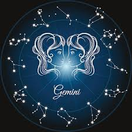
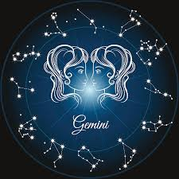
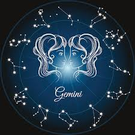

A astrologia é uma antiga prática que estuda as influências dos astros no comportamento e na vida das pessoas. Através do seu signo, podemos descobrir tendências, características e mistérios que orientam a jornada de cada indivíduo. Explore o site para saber mais sobre seu signo, compatibilidades e previsões astrológicas. Descubra como os planetas e estrelas podem iluminar o caminho!
